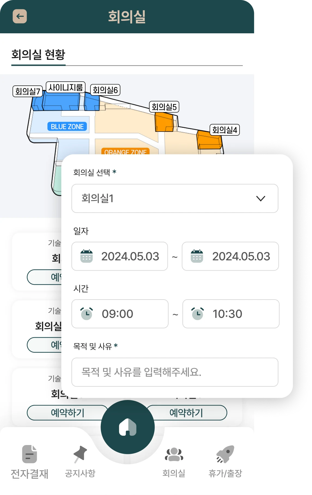
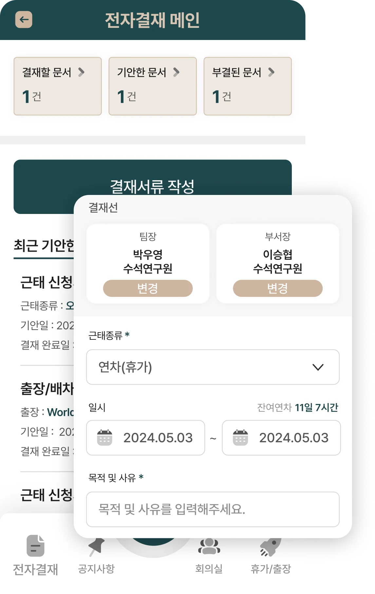

02 추가 경험 · 모바일 인트라넷
현황 확인에서 회의실 예약과 근태 신청으로 연결했습니다.
01
회의실 현황
공간 현황에서 예약할 회의실을 확인하는 화면이 필요했습니다.
02
예약 입력
예약일·시간·목적을 모바일에서 입력하도록 구성했습니다.
03
근태 신청
문서 상태 확인에서 근태 종류·일자·사유 입력으로 이어지도록 정리했습니다.
PROJECT 08 · TEAM PROJECT · MOBILE WORKFLOW
디자이너 팀에서 모바일 인트라넷의 기획·UI·퍼블리싱에 참여했습니다. 회의실 현황에서 예약으로, 전자결재 현황에서 근태 신청으로 이어지는 화면을 구성했습니다. 당시 설계한 원본 화면을 소개합니다.
"회의실 현황에서 예약으로, 문서 상태에서 근태 신청으로"

CASE AT A GLANCE
디자이너 팀에서 모바일 인트라넷의 기획·UI·퍼블리싱에 참여했습니다. 팀 내부에서 설계·구현을 확인한 미배포 프로젝트입니다.
01 프로젝트 배경
회의실에서는 공간 현황을 확인한 뒤 예약일·시간·목적을 입력합니다. 전자결재에서는 문서 상태를 확인한 뒤 근태 종류·일자·사유를 입력하도록 설계했습니다.
02 추가 경험 · 모바일 인트라넷
공간 현황에서 예약할 회의실을 확인하는 화면이 필요했습니다.
예약일·시간·목적을 모바일에서 입력하도록 구성했습니다.
문서 상태 확인에서 근태 종류·일자·사유 입력으로 이어지도록 정리했습니다.
03 설계 결정
공간 현황 확인 → 예약일·시간·목적 입력의 흐름입니다.
문서 상태 확인 → 근태 종류·일자·사유 입력의 흐름입니다.
디자이너 팀에서 기획·UI·퍼블리싱에 참여하고 팀 내부에서 설계·구현을 확인했습니다.
04 회의실 예약과 근태 신청
설계 자료


05 회고
회의실은 공간 현황을, 근태 신청은 문서 상태를 먼저 보여주었습니다. 신청 종류에 따라 시작 화면에 필요한 정보가 달랐습니다.
실제 사용 과업에서 예약 충돌과 입력 오류, 신청 완료까지의 흐름을 확인하고 싶습니다.